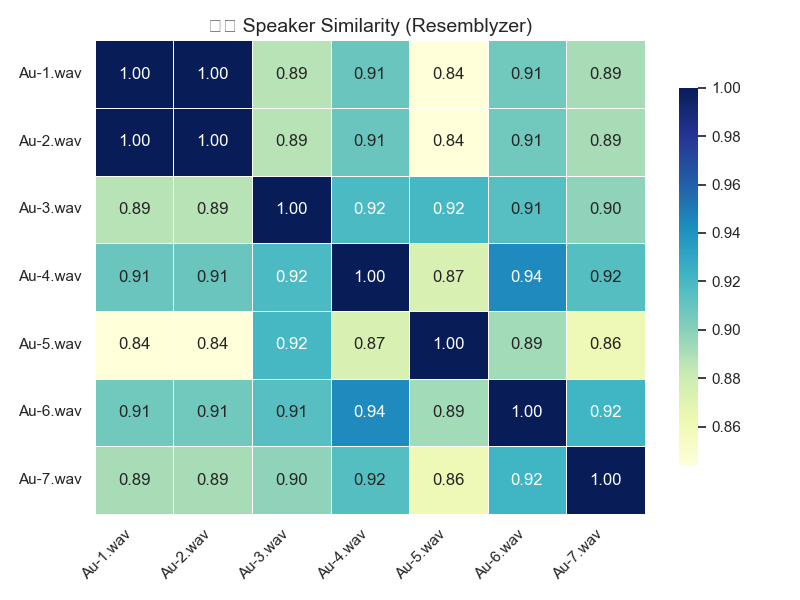
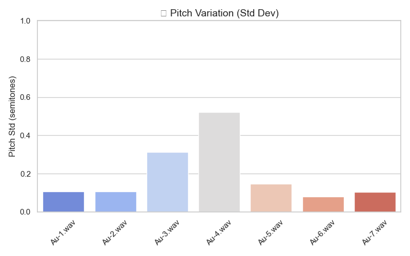
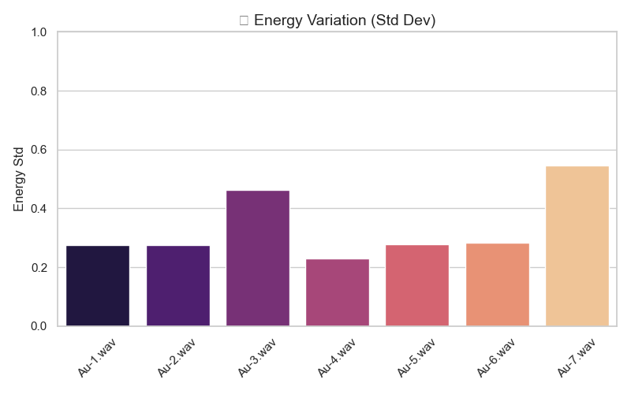

ElevenLabs Dubbing Studio Analysis
A detailed analysis of the AI dubbing pipeline — transcription, translation, voice generation, and lip-sync — with metrics, audio comparisons, and improvement suggestions.
Overview
The platform achieved ~80% accuracy on the first attempt, but refining the remaining small errors proved challenging due to some product limitations I encountered.
Approach: I analysed each stage of the dubbing pipeline — transcription, translation, AI voice generation, and lip-sync — independently. The sections below break down the setup and findings from each step.
Strengths
- Highly expressive and diverse voice models
- Excellent transcription accuracy
- Very high-quality translations
- Minimal lip-sync errors
- Effective background sound separation
Areas for Improvement
- Enhance expressivity for non-cloned voices — currently less natural compared to cloned voices
- Introduce more granular controls for expressivity at the word level — e.g., integrate the advanced v3 [tags] into dubbing
- Increase text editing flexibility — enable splitting and merging using text alongside audio and pacing adjustments
- Improve speaker detection — leveraging video analytics could make this more accurate
- Enable frame-by-frame editing — to allow finer adjustments in dubbing
Transcription Analysis
Setup & Methodology
I took a small portion of Carl Sagan's Pale Blue Dot Speech as an example and used their TTS model to generate AI voice, then transcribed it back to text to compare both texts.
Original text:
AI Voice (Generated via ElevenLabs)
Key Differences Found
- Punctuation: "That's here." → "That's here," (period to comma)
- Punctuation: "That's home." → "That's home," (period to comma)
- Punctuation: "That's us." → "That's us," (period to comma)
- Quotes: "superstar," → superstar (removed quotes)
- Quotes: "supreme leader," → supreme leader, (removed quotes)
- Punctuation: "lived there--on" → "lived there, on" (em dash to comma)
Original Text (Carl Sagan)
"Look again at that dot. That's here. That's home. That's us. On it everyone you love, everyone you know, everyone you ever heard of, every human being who ever was, lived out their lives. The aggregate of our joy and suffering, thousands of confident religions, ideologies, and economic doctrines, every hunter and forager, every hero and coward, every creator and destroyer of civilization, every king and peasant, every young couple in love, every mother and father, hopeful child, inventor and explorer, every teacher of morals, every corrupt politician, every "superstar," every "supreme leader," every saint and sinner in the history of our species lived there--on a mote of dust suspended in a sunbeam."
AI TTS → Transcription (ElevenLabs)
"Look again at that dot. That's here, that's home, that's us. On it everyone you love, everyone you know, everyone you ever heard of, every human being who ever was lived out their lives. The aggregate of our joy and suffering, thousands of confident religions, ideologies, and economic doctrines, every hunter and forager, every hero and coward, every creator and destroyer of civilization, every king and peasant, every young couple in love, every mother and father, hopeful child, inventor and explorer, every teacher of morals, every corrupt politician, every superstar, every supreme leader, every saint and sinner in the history of our species lived there, on a mote of dust suspended in a sunbeam."
Transcription Results
Near Perfect Transcription
| Metric | Value | Notes |
|---|---|---|
| Levenshtein Distance | 23 / 714 | ~3% of characters differ (all punctuation/spacing) |
| BLEU Score | 0.87 | 1-gram precision: 98.6% |
| Match Score (no punct/spaces) | 100% | Perfect word preservation |
| BERTScore F1 | 0.96 | Excellent semantic similarity |
| SentenceBERT Cosine | 0.99 | Very high similarity |
- Levenshtein distance of 23 over 714 characters means that only ~3% of characters differ, all entirely due to punctuation and spacing rather than actual words.
- The overall BLEU score is 0.87, with a near-perfect 1-gram precision of 98.6%, showing that almost every word was preserved in the round-trip text.
- After removing all punctuation and spaces, the match score between the two texts is 100%.
Note: This was a simple single-speaker audio; with more complex dialogue, results may differ — but 100% word preservation here is impressive.
Translation: English → Spanish
Strong Semantic Alignment
| Metric | Score |
|---|---|
| BERTScore | 0.8255 |
| LaBSE Cosine | 0.9464 |
The Spanish translation preserves the original meaning well, with a BERTScore of 0.83 and a LaBSE cosine similarity of 0.95, indicating strong semantic alignment.
Original Audio (English)
Translated Audio (Spanish)
Original Text (English)
"Look again at that dot. That's here, that's home, that's us. On it everyone you love, everyone you know, everyone you ever heard of, every human being who ever was lived out their lives. The aggregate of our joy and suffering, thousands of confident religions, ideologies, and economic doctrines, every hunter and forager, every hero and coward, every creator and destroyer of civilization, every king and peasant, every young couple in love, every mother and father, hopeful child, inventor and explorer, every teacher of morals, every corrupt politician, every superstar, every supreme leader, every saint and sinner in the history of our species lived there, on a mote of dust suspended in a sunbeam."
Translated Text (Spanish)
"Mira de nuevo ese punto. Ahí está aquí, ahí está el hogar, ahí estamos nosotros. En él, todos los que amas, todos los que conoces, todos de quienes has oído hablar, todos los seres humanos que han existido vivieron sus vidas. El conjunto de nuestra alegría y sufrimiento, miles de religiones, ideologías y doctrinas económicas confiadas, cada cazador y recolector, cada héroe y cobarde, cada creador y destructor de civilización, cada rey y campesino, cada pareja joven enamorada, cada madre y padre, niño esperanzado, inventor y explorador, cada maestro de moral, cada político corrupto, cada superestrella, cada líder supremo, cada santo y pecador en la historia de nuestra especie vivieron allí, en una mota de polvo suspendida en un rayo de sol."
Translation: English → Hindi
Decent Translation Quality
| Metric | Score |
|---|---|
| BERTScore | 0.6559 |
| LaBSE Cosine | 0.8214 |
Not as good as Spanish but still great! As I speak Hindi, I thought it was overall a decent translation.
"Messi is turning around Tim Parker" is translated to "Messi is turning Tim Parker around" which is not bad but that's scope for improvement I guess.
Original Text (English)
"For Dortmund. Here's Messi, trying to turn around Tim Parker, who's chasing after him, and then spinning again. Still Lionel Messi surveying, finding Jordi Alba. Back to Messi!"
Translated Text (Hindi)
"डॉर्टमुंड के लिए। यहाँ मेसी हैं, टिम पार्कर को घुमाने की कोशिश कर रहे हैं, जो उनका पीछा कर रहे हैं, और फिर से घूम रहे हैं। फिर भी लियोनेल मेसी देख रहे हैं, जोर्डी अल्बा को ढूंढ रहे हैं। वापस मेसी के पास!"
Zero-Shot Dubbing Comparison
Impressive Localization with No Edits
Translation was great. I did not need to edit anything.
English Original
Hindi Dubbed
Complex Dubbing: Seinfeld
Multi-Speaker Scene with Expressivity
English Original
Hindi Dubbed
Issues Found
- Detected 2 speakers instead of 3, even when specified 3 speakers
- Cloned voices have higher expressivity than non-cloned voices
- Retranslate button is not obvious
- Can't manipulate emotions of specific words
- Certain portions in Hindi seem rushed; expanding audio duration changes voice and sounds muffled
- Could not split segments into smaller segments or combine them based on text
- Small translation errors mainly on expressions
Things It Did Well
- Nice background separation
- Good lip sync since original and dubbed audio match in length and are aligned
- 80% of dubbing was zero-shot
While the first output was good (got to 80%), it was difficult to improve with current features.
Deep Dive: Issues & Suggestions
Detailed Analysis with Audio Comparisons & UI Screenshots
Issue 1: Cloned Voices Have Higher Expressivity
Original (English)
Hindi (Cloned Voice)
Hindi (Non-Cloned Voice)
Suggestion
A potential approach could be to clone the voice multiple times with gradually reduced similarity scores — this might help retain emotional expressiveness while making the voice sound more distinct from the original.
Issue 2: UI/UX & Control Limitations

Retranslate button is not obvious to find and can't manipulate specific word emotions
Suggested Improvement
Add a control panel at segment level on texts with:
- Word-level emotion controls
- Prominent retranslate buttons — it was not obvious to find
- Segment splitting/combining tools
Issue 3: Speaker Detection Problems

Gemini model detecting current number of speakers
Suggested Enhancement
Integrate video analytics using Gemini models that can perform video analysis of characters to:
- Automatically detect number of speakers
- Identify individual characters
- Map speakers to visual characters
- Improve speaker segmentation accuracy
AI Voice Generation Analysis
Emotional Expression Differences
Original English Audio
Key Feature: Screams "Meeeessssiiii" with high emotional intensity
Hindi AI Voice Generation
Key Feature: Says "Messi" with neutral tone
Emotional Expression Gap
The English commentary captures the excitement and emotion of the moment with an elongated, passionate "Meeeessssiiii", while the Hindi AI voice generation produces a more neutral "Messi" pronunciation.
Speaker Similarity vs Prosody
Analysis of 7 Voice Regenerations
The audio regeneration maintains speaker similarity but shows low variation in prosody across all samples.
Sample 1
Sample 2
Sample 3
Sample 4
Sample 5
Sample 6
Sample 7
Analysis Results
1. Speaker Similarity Performance

Speaker similarity with audio generation is consistently good across samples
2. Pitch Variation

All samples show very similar pitch expressivity patterns
3. Energy Variation

Energy patterns remain consistent across all voice generations
Detailed Metrics

Thoughts on Design Philosophy
I found it interesting that the core controls like splitting and regenerating are built around manipulating audio files rather than text segments. This audio-first design works well for ensuring precise lip-sync, managing speaker transitions, and controlling pacing.
However, it may fall short when trying to achieve granular emotional control at the word level, where a text-first approach could offer more flexibility. It reflects a trade-off between low-level precision and high-level expressivity.